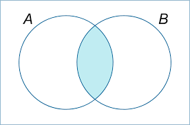

Set Operations
In this module, we explore the role of set operations within relational algebra, a key component of the relational model used in databases. Set operations such as union, intersection, difference, and Cartesian product enable efficient data manipulation by combining, filtering, and relating tables. Understanding these operations is crucial for constructing powerful queries and effectively managing relational databases.
Introduction to Set Theory and Relational Algebra
Set theory is a fundamental concept in relational algebra, providing the basis for operations that manipulate relations. These operations enable combining and filtering data effectively in relational databases.
- Set theory deals with the mathematical concept of sets, collections of distinct elements.
- Relational algebra applies set theory to relations (tables) in databases.
- Common operations include union, intersection, difference, and Cartesian product.
- These operations allow manipulation of data across multiple relations.
- Set operations are performed on relations that have the same schema.
Set theory is essential for understanding how relational algebra manipulates and combines relations.

Intersection Operation in Relational Algebra
The intersection operation retrieves rows that are common to two relations. It is used to find data that appears in both relations, making it useful when comparing datasets or finding shared entries between relations.
∩ - Intersection
- Intersection finds common tuples between two relations.
- The result includes only those tuples that appear in both relations.
- Denoted as Relation1 ∩ Relation2
- It’s a binary operation, meaning it operates on two relations.
- Both relations must be union-compatible, meaning they have the same set of attributes and data types.
- Intersection is often used in conjunction with other set-based operations like union and difference.

Examples
Students ∩ Registered
Courses ∩ OfferedCourses
Employees ∩ Managers
Intersection is useful for finding commonality between two sets of data in relational databases.
Properties of the Intersection Operator
Definition
\[ R_1 \cap R_2 = \{ t \mid t \in R_1 \text{ and } t \in R_2 \} \]
- where \(t\) is a row (tuple),
- \(R_1\) and \(R_2\) are relations (tables) with the same attributes,
- The intersection operation returns a new relation containing only the rows that are present in both \(R_1\) and \(R_2\),
- The result consists of distinct rows that satisfy the condition of being in both relations.
Properties
- Idempotent – Applying the intersection of a relation with itself doesn’t change the result:
\[ R \cap R = R \]
- Commutative – The order of relations in an intersection operation doesn’t matter:
\[ R_1 \cap R_2 = R_2 \cap R_1 \]
- Associative – The grouping of intersection operations doesn’t affect the result:
\[ (R_1 \cap R_2) \cap R_3 = R_1 \cap (R_2 \cap R_3) \]
- Intersection with an empty set – The intersection of a relation with an empty set is the empty set:
\[ R \cap \emptyset = \emptyset \]
- Intersection distributes over union – The intersection of two relations distributes over their union:
\[ R_1 \cap (R_2 \cup R_3) = (R_1 \cap R_2) \cup (R_1 \cap R_3) \]
Explanation of properties
- Idempotent: Combining a relation with itself using intersection does not remove any rows, so the result remains the same.
- Commutative: The order of the relations in the intersection operation does not affect the result.
- Associative: You can group intersection operations in any way, and the result will be the same.
- Intersection with an empty set: Intersecting with an empty relation results in an empty set because no rows can be in both the original relation and an empty set.
- Distributed: Intersection distributes over union, meaning you can break down or combine intersections in a structured way over unions.
Difference in Relational Algebra
Difference in relational algebra subtracts one relation from another, returning the rows that are present in the first relation but not the second.
- The difference operation returns tuples that are in one relation but not in the other.
- It is often used to filter out unwanted data from a larger dataset.
- The relations must have the same schema for the difference operation to be valid.
- This operation can help isolate unique data points in a relation.
- The result is a relation that includes only the data exclusive to the first set.
Difference is a powerful tool for excluding data from one relation that is present in another.
Properties of the Difference Operator
Definition
\[ R_1 - R_2 = \{ t \mid t \in R_1 \text{ and } t \notin R_2 \} \]
- where \(t\) is a row (tuple),
- \(R_1\) and \(R_2\) are relations (tables) with the same attributes,
- The difference operation returns a new relation containing only the rows that are in \(R_1\) but not in \(R_2\),
- The result consists of distinct rows that exist in \(R_1\) and are absent from \(R_2\).
Properties
- Non-commutative – The order of relations in the difference operation matters:
\[ R_1 - R_2 \neq R_2 - R_1 \]
- Not associative – Grouping difference operations affects the result:
\[ (R_1 - R_2) - R_3 \neq R_1 - (R_2 - R_3) \]
- Difference with an empty set – The difference between a relation and an empty set is the relation itself:
\[ R_1 - \emptyset = R_1 \]
- Difference with itself – The difference between a relation and itself is the empty set:
\[ R_1 - R_1 = \emptyset \]
- Distributive over intersection – The difference operation distributes over intersection:
\[ R_1 - (R_2 \cap R_3) = (R_1 - R_2) \cap (R_1 - R_3) \]
Explanation of properties
- Non-commutative: The order in which the relations are used in the difference matters because the result will include rows from \(R_1\) that are not in \(R_2\), but not vice versa.
- Not associative: The grouping of relations in a difference operation affects the outcome since subtracting another relation later changes the rows that remain.
- Difference with an empty set: Subtracting an empty set from a relation has no effect since there are no rows to remove.
- Difference with itself: Subtracting a relation from itself results in an empty set, as no rows are left.
- Distributive over intersection: Difference distributes over intersection, allowing you to apply the difference to both parts of the intersection separately and then take their intersection.
Cartesian Product in Relational Algebra
The Cartesian product operation combines all tuples from two relations, creating a new relation with every possible pair of tuples.
- Cartesian product pairs each tuple from the first relation with every tuple from the second.
- The result relation includes all combinations of rows from both input relations.
- The schema of the result is the combination of the schemas from both relations.
- This operation can produce very large results if both relations have many tuples.
- Cartesian product is a foundation for join operations in relational databases.
Cartesian product provides the basis for combining relations, though it may require filtering for meaningful results.
Here’s the definition and properties of the Cartesian product operation in relational algebra, formatted similarly to the template provided:
Properties of the Cartesian Product Operator
Definition
\[ R_1 \times R_2 = \{ t_1 \, t_2 \mid t_1 \in R_1 \text{ and } t_2 \in R_2 \} \]
- where \(t_1\) is a row (tuple) from relation \(R_1\),
- \(t_2\) is a row (tuple) from relation \(R_2\),
- The Cartesian product returns a new relation formed by concatenating every row from \(R_1\) with every row from \(R_2\),
- The result contains all possible combinations of tuples from both relations.
Properties
- Non-commutative – The order of the relations matters in the Cartesian product:
\[ R_1 \times R_2 \neq R_2 \times R_1 \] (unless \(R_1\) and \(R_2\) are identical and have the same attributes)
- Associative – The grouping of Cartesian product operations doesn’t affect the result:
\[ (R_1 \times R_2) \times R_3 = R_1 \times (R_2 \times R_3) \]
- Cartesian product with an empty set – The Cartesian product with an empty relation results in an empty set:
\[ R \times \emptyset = \emptyset \]
- Distributive over union – The Cartesian product distributes over union:
\[ R_1 \times (R_2 \cup R_3) = (R_1 \times R_2) \cup (R_1 \times R_3) \]
- Size of result – The number of rows in the result is the product of the number of rows in the input relations:
\[ |R_1 \times R_2| = |R_1| \times |R_2| \]
Explanation of properties
- Non-commutative: The order in which the relations are combined affects the resulting tuples (since concatenating \(t_1\) with \(t_2\) is different from \(t_2\) with \(t_1\)).
- Associative: You can group Cartesian product operations in any way, and the result will be the same.
- Cartesian product with an empty set: If either relation is empty, the result will be empty because there are no tuples to pair.
- Distributive over union: Cartesian product distributes over union, allowing you to break down the product into individual components and combine them after applying the product.
- Size of result: The Cartesian product increases the number of rows, multiplying the rows of \(R_1\) by the rows of \(R_2\).
This definition and properties align with the structure of other relational operations while explaining the Cartesian product in relational algebra.
Combining Relations Using Set Operations
Set operations allow the combination of multiple relations in a variety of ways, depending on the desired outcome of the query.
- Relational algebra supports various set operations like union, intersection, and difference.
- These operations allow filtering and merging data across relations.
- Set operations are only valid when the schemas of the involved relations match.
- Use cases include combining multiple tables, finding common data, or filtering out specific records.
- Understanding these operations is key to effective data manipulation in relational databases.
Set operations provide flexible tools for combining and comparing datasets in relational databases.
Set Operation Requirements and Considerations
When performing set operations, it’s essential to ensure that both relations have compatible schemas and understand how each operation behaves.
- Set operations can only be performed on relations with identical schemas.
- The number of attributes and their types must match for the operation to succeed.
- Set operations can return large results, depending on the size of the input relations.
- Performance considerations include the size of relations and efficiency of the operation.
- Proper indexing can improve the speed of set operations in large databases.
Understanding the requirements of set operations ensures successful and efficient data manipulation.
Examples of Set Operations in Relational Queries
Relational algebra operations like union, intersection, and difference can be directly applied in database queries to filter and combine data.
- Example: Union of two employee tables to combine employee records from two departments.
- Example: Intersection of student and graduate tables to find students who have graduated.
- Example: Difference between a product catalog and inventory to find out-of-stock items.
- Cartesian product used to combine customer and order tables for further analysis.
- Practical queries often combine set operations with other relational algebra operations.
Set operations are applied in real-world scenarios to efficiently manipulate and query data.
Set Operations in Real-World Databases
Set operations play a vital role in real-world databases, helping manage and analyze large datasets effectively.
- Used to merge large datasets across departments or organizations.
- Helpful in financial reporting, where records from different periods or regions are combined.
- Set operations can aid in data cleaning by removing duplicates or irrelevant records.
- They are fundamental in multi-relational databases where data is distributed across tables.
- Often used in cloud environments for large-scale data analysis and processing.
In practice, set operations streamline data integration and analysis across various industries.
Summary of Set Operations in Relational Algebra
Set operations, including union, intersection, difference, and Cartesian product, are key tools in relational algebra for manipulating and combining relations. They enable powerful queries that form the basis of relational database functionality.
- Set theory provides the foundation for combining and filtering relations.
- Intersection finds common records, while difference filters out data from one relation.
- Cartesian product creates all possible combinations of tuples from two relations.
- Union merges two relations, removing duplicates.
- These operations are essential for querying and managing relational databases.
Mastery of set operations in relational algebra allows for complex and efficient database queries.